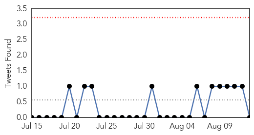
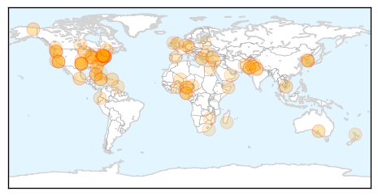
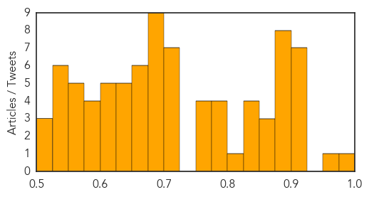

Unknown
30-Day Web Trend
0 alerts, 0 warnings

30-Day Twitter Trend
0 alerts, 0 warnings

Article Locations

Article Confidences
Top Articles:
- 0.977
- WA Salmonella Cases Now at 134 in 10 Counties, Outbreak Strain Found at WA Slaughterhouse
- 0.968
- Salmonella outbreak sickens 2 in county
- 0.917
- Chicago Tribune
- 0.917
- Chicago Tribune
- 0.917
- Chicago Tribune
- 0.917
- Chicago Tribune
- 0.917
- Chicago Tribune
- 0.917
- Chicago Tribune
- 0.911
- Stringer slams officials for not moving fast on Legionnaires
- 0.895
- Q fever: CSL records almost 10pc rise in demand for vaccine after Landline investigation
- 0.892
- Oklahoma resident dies from brain amoeba after visit to Lake Murray
- 0.890
- Cyclospora outbreak hits 16 York Region residents
- 0.890
- Man Dies After Swimming in Lake Murray
- 0.887
- Members of the State Senate’s Puerto Rican/Latino Caucus Call for Hospitals to be Tested for Legionella Every Three Months
- 0.885
- S.Korea’s President to Visit White House in October
- 0.880
- National TB stats show 13,000 fatalities, National, Phnom Penh Post
- 0.876
- Man dies from brain-eating amoeba in Oklahoma lake
- 0.874
- Retirement home cleans up after Legionnaires’ disease found
- 0.871
- Early tests show salmonella outbreak from pork linked to Graham slaughter facility
- 0.860
- Oklahoma man dies from brain-eating amoeba
- 0.848
- Several E. coli Illnesses and a Death Likely Linked to Indiana Daycare
- 0.845
- Rikers Island Man Diagnosed With the Disease
- 0.842
- Lyme disease in U.S. is under-reported
- 0.836
- Africa Marks One Year Since Its Last Recorded Case of Polio, Hopes for Future Eradication of the Disease
- 0.808
- Bird flu hits Port Harcourt
- 0.797
- Queens inspecting cooling towers for Legionnaires’ disease • TimesLedger
- 0.796
- Africa Marks Polio-Free Year
- 0.795
- 9 more sites in South Bronx test positive for Legionella bacteria in Legionnaires' disease outbreak; no new cases reported in 9 days
- 0.780
- Plant Closed for Bacteria; Glaxo Calls Its Drugs Safe
- 0.775
- Africa celebrates one year without polio: UN
- 0.769
- Africa Celebrates One Year Without Polio: UN
- 0.764
- Legionnaires’ Disease Cases Treated in Broome
- 0.760
- Toxic blue-green algae pose increasing threat to nation's drinking, recreational water
- 0.722
- City Council passes new law to prevent future outbreaks of Legionnaires' disease
- 0.719
- Scott Stringer: de Blasio response to outbreak 'laid-back'
- 0.719
- Rivers Govt. receives report on bird flu, takes samples for test
- 0.718
- Glaxo drugs 'not exposed to Legionnaires' bacteria'
- 0.718
- Africa Marks Polio-Free Year & WHO Records It As A Major Acheivement
- 0.708
- Nigeria, the last endemic country in the African region, marked one year without a case of wild polio
- 0.701
- How Did a Rare, Vomit-Inducing Parasite Infect the Water Supply for 300,000 People?
- 0.699
- Mali: Struggle for survival in Kidal amid water and health-care crises
- 0.698
- South Korea, US to hold summit in October
- 0.677
- Kerry to preside over historic US embassy flag-raising in Cuba
- 0.677
- US launches first manned strikes on IS group from Turkey
- 0.677
- Turkey faces autumn election after coalition talks fail
- 0.677
- Stolen 'La Coiffeuse' Picasso to be returned to France
- 0.677
- Boko Haram has new leader, says Chad's president
- 0.677
- Pakistan hands death penalty to six militants behind Peshawar school attack
- 0.677
- UK to make ‘formal protest’ to Ecuador over Assange
- 0.672
- Meet public health goals with more investment and innovation
Showing top 50 articles...
Top Tweets:
-
No tweets found for Aug 13, 2015